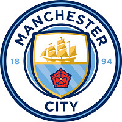
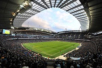
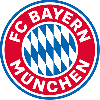
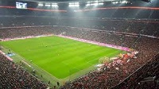
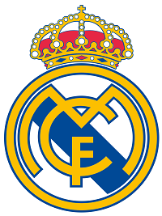
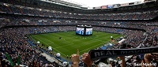

Top 3 Best Teams in the World
1. Manchester City
Manchester City Football Club is an English football club based in Manchester that competes in the Premier League, the top flight of English football. Founded in 1880 as St. Mark's (West Gorton), it became Ardwick Association Football Club in 1887 and Manchester City in 1894. The club's home ground is the Etihad Stadium in east Manchester, to which it moved in 2003, having played at Maine Road since 1923. The club adopted their sky blue home shirts in 1894 in the first season of the club's current iteration, that have been used ever since.
Manchester City entered the Football League in 1892, and won their first major honour with the FA Cup in 1904. The club had its first major period of success in the late 1960s, winning the League, European Cup Winners Cup, FA Cup and League Cup under the management of Joe Mercer and Malcolm Allison. After losing the 1981 FA Cup Final, the club went through a period of decline, culminating in relegation to the third tier of English football for the only time in its history in 1998. They since regained promotion to the top tier in 2001–02 and have remained a fixture in the Premier League since 2002–03.
 In 2008, Manchester City was purchased by Abu Dhabi United Group for £210 million and received considerable financial investment in both playing staff and club facilities, including the £150 million Etihad Campus in east Manchester Under the management of Pep Guardiola they won the Premier League in 2018 becoming the only Premier League team to attain 100 points in a single season. In 2019, they won four trophies, completing an unprecedented sweep of all domestic trophies in England and becoming the first English men's team to win the domestic treble.
Manchester City's revenue was the fifth highest of a football club in the world in the 2018–19 season at €568.4 million. In 2019, Forbes estimated the club was the fifth most valuable in the world at $2.69 billion, The club is owned by the City Football Group, a British-based holding company valued at £3.73 (US$4.8) billion in November 2019 following a 10% stake sale to Silver Lake.
2. Bayern Munich
FC Bayern, is a German professional sports club based in Munich, Bavaria. It is best known for its professional football team, which plays in the Bundesliga, the top tier of the German football league system. Bayern is the most successful club in German football history, having won a record 30 national titles, including eight consecutively since 2013, and 20 national cups, along with numerous European honours.
FC Bayern Munich was founded in 1900 by 11 football players, led by Franz John. Although Bayern won its first national championship in 1932, the club was not selected for the Bundesliga at its inception in 1963. The club had its period of greatest success in the mid-1970s when, under the captaincy of Franz Beckenbauer, it won the European Cup three consecutive times (1974–1976). Overall, Bayern has reached eleven European Cup/UEFA Champions League finals, winning their sixth title in the 2020 final as part of a continental treble, after which it became only the second European club to achieve the continental treble twice. Bayern has also won one UEFA Cup, one European Cup Winners' Cup, two UEFA Super Cups, two FIFA Club World Cups and two Intercontinental Cups, making it one of the most successful European clubs internationally and the only German club to have won both international titles. By winning the 2020 FIFA Club World Cup, Bayern Munich became only the second club to win the sextuple. The club has traditional local rivalries with 1860 Munich and 1. FC Nürnberg, as well as with Borussia Dortmund since the mid-1990s.
 Since the beginning of the 2005–06 season, Bayern has played its home games at the Allianz Arena. Previously the team had played at Munich's Olympiastadion for 33 years. The team colours are red and white, and the crest shows the white and blue flag of Bavaria. In terms of revenue, Bayern Munich is the largest sports club in Germany and the fourth highest-earning football club in the world, generating €660.1 million in 2020.[5] In November 2019, Bayern had 293,000 official members and 4,499 officially registered fan clubs with over 350,000 members. The club has other departments for chess, handball, basketball, gymnastics, bowling, table tennis and senior football with more than 1,100 active members.
3. Real Madrid
Real Madrid, is a Spanish professional football club based in Madrid. Founded on 6 March 1902 as Madrid Football Club, the club has traditionally worn a white home kit since inception. The word real is Spanish for "royal" and was bestowed to the club by King Alfonso XIII in 1920 together with the royal crown in the emblem. The team has played its home matches in the 81,044-capacity Santiago Bernabéu Stadium in downtown Madrid since 1947. Unlike most European sporting entities, Real Madrid's members (socios) have owned and operated the club throughout its history.The club was estimated to be worth €3.8 billion ($4.2 billion) in 2019, and it was the second highest-earning football club in the world, with an annual revenue of €757.3 million in 2019. The club is one of the most widely supported teams in the world. Real Madrid is one of three founding members of La Liga that have never been relegated from the top division since its inception in 1929, along with Athletic Bilbao and Barcelona. The club holds many long-standing rivalries, most notably El Clásico with Barcelona and El Derbi Madrileño with Atlético Madrid.
 Real Madrid established itself as a major force in both Spanish and European football during the 1950s, winning five consecutive European Cups and reaching the final seven times. This success was replicated in the league, which the club won five times in the space of seven years. This team, which included Alfredo Di Stéfano, Ferenc Puskás, Francisco Gento, and Raymond Kopa, is considered by some in the sport to be the greatest team of all time.
In domestic football, the club has won 66 trophies; a record 34 La Liga titles, 19 Copa del Rey, 11 Supercopa de España, a Copa Eva Duarte, and a Copa de la Liga. In European and worldwide competitions, Real Madrid have won a record 26 trophies; a record 13 European Cup/UEFA Champions League titles, two UEFA Cups and four UEFA Super Cups. In international football, they have achieved a record seven club world championships.
Real Madrid was recognised as the FIFA Club of the 20th Century on 11 December 2000 with 42.35% of the vote, and received the FIFA Centennial Order of Merit on 20 May 2004. The club was also awarded Best European Club of the 20th Century by the IFFHS on 11 May 2010. In June 2017, the team succeeded in becoming the first club to win consecutive Champions League titles, then made it three in a row and four in five seasons in May 2018, extending their lead atop the UEFA club rankings. As of 2020, Real Madrid are ranked third behind Bayern Munich and Barcelona.